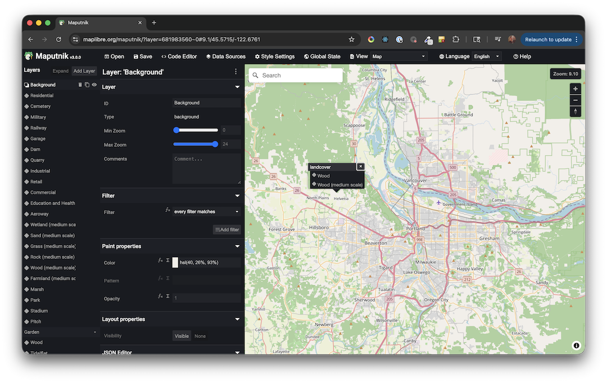
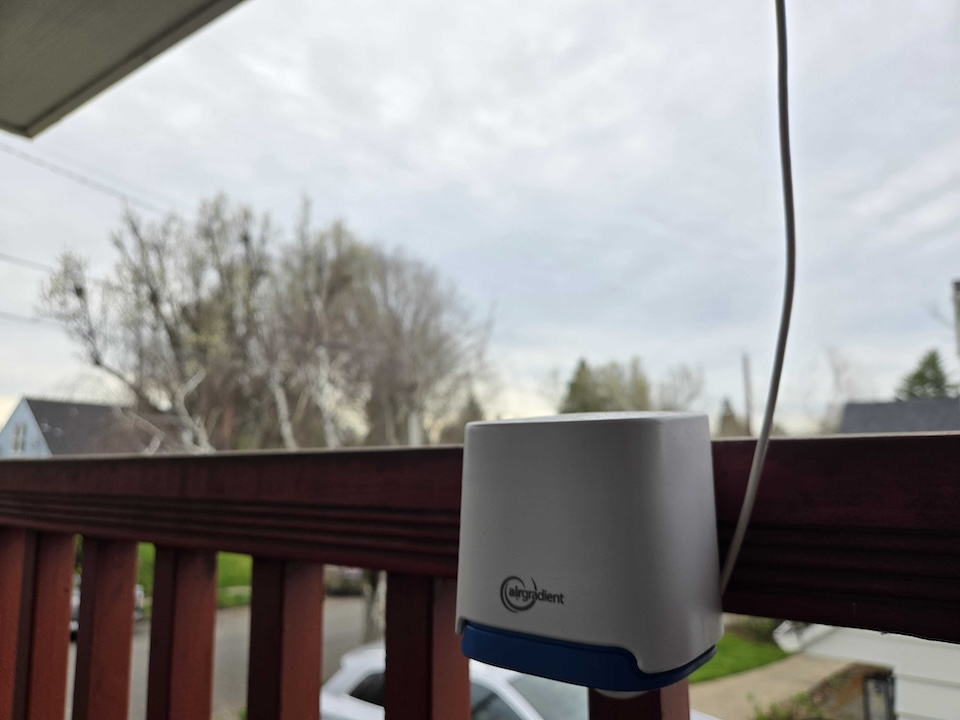
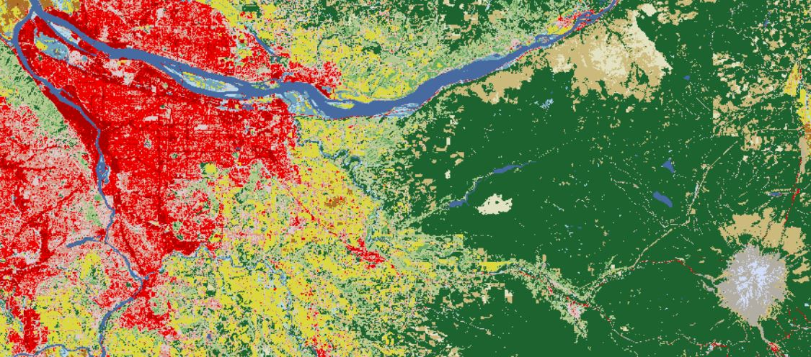
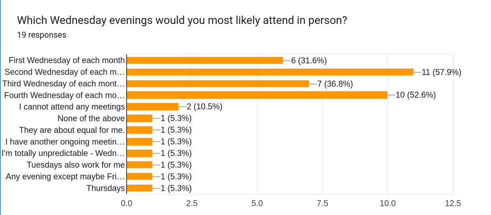
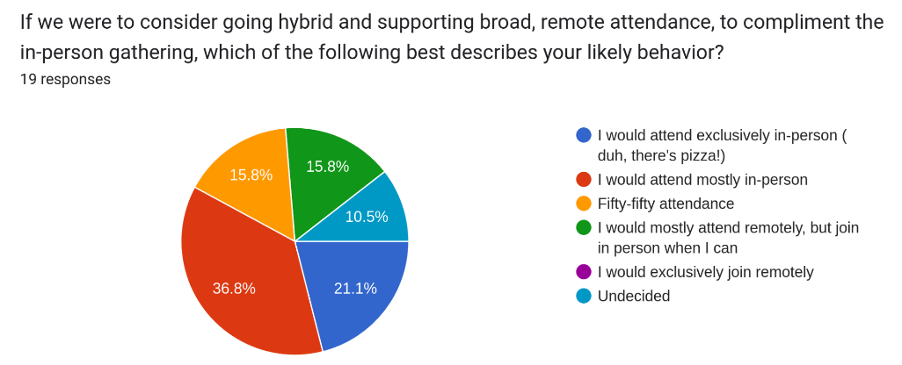
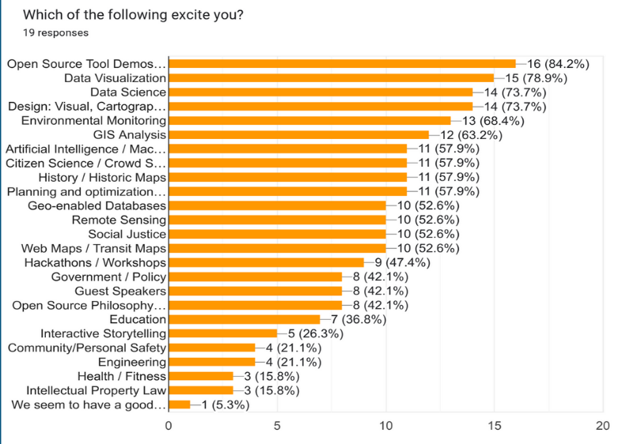
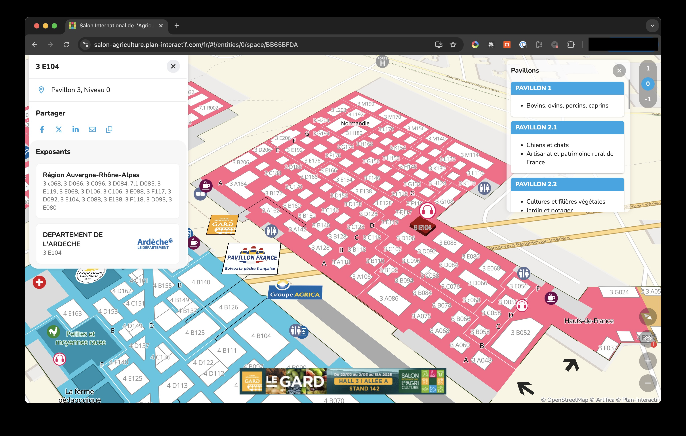
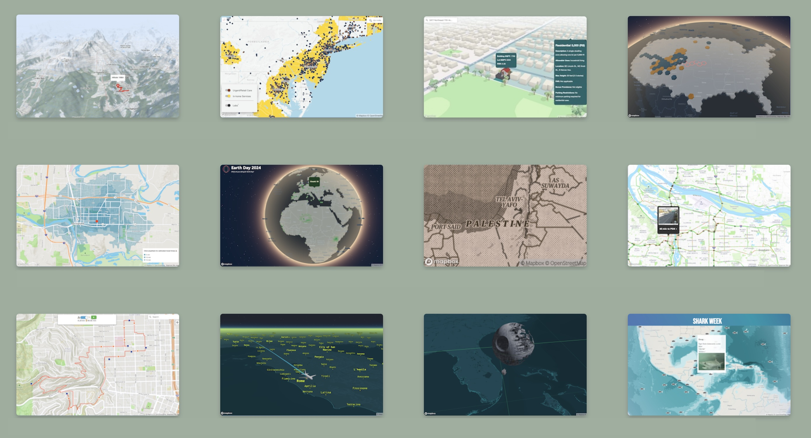
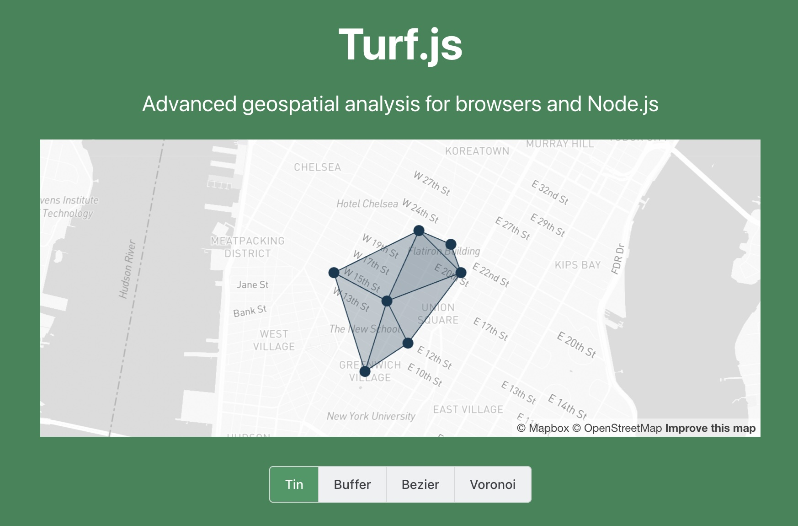
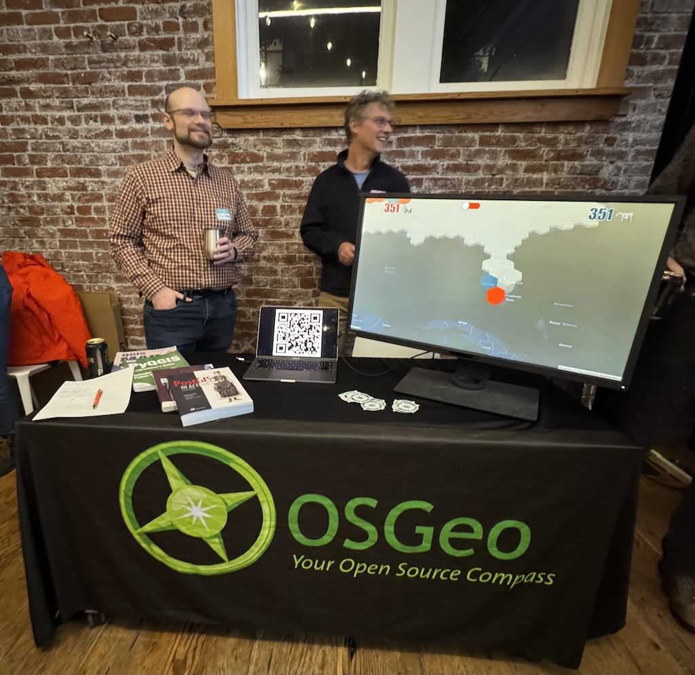

April Meeting - MapLibre + Maputnik: The Open Source Web Map Alternative You Should Know About
MapLibre is a community-driven, open-source fork of Mapbox GL JS, offering a fully free and vendor-independent mapping library for web and mobile applications. It maintains close compatibility with the Mapbox Style Specification, meaning most existing Mapbox styles (pre-Standard) and workflows can migrate with minimal friction.
Maputnik is the visual style editor built for MapLibre (and the broader Mapbox GL ecosystem), allowing developers and designers to create, edit, and export map styles through a browser-based GUI. Together, they form a powerful open-source stack that eliminates licensing costs and API key dependencies while preserving professional-grade cartographic control.
For teams building mapping applications who want to avoid vendor lock-in, this duo represents a compelling, production-ready alternative to closed platforms. Please join us on April 22nd for an evening of maps, tools, and discussion with the local geospatial community.
About the speaker: Rafa Gutierrez is a 10 year alum from Mapbox and long time open source advocate. He will be sharing his experience with MapLibre and Maputnik and how he uses them in his work.

Past Meetings
March Meeting - “Should I open a window?”
This talk will cover how this question led one person to confront and process issues like digital isolation, international tariffs, and climate change. Ryan will share about how he has chosen to collect and publish environmental data to open data sets using open source hardware and software, why these metrics are so important for measuring community health, and why citizen science may be our best hope to support data-driven decisions and rebuild trust in polarized times.

Information Theory Part II:
A Terroir of Landslides!
Join us once again on 4th Wednesday (February 25th), to continue the conversation with David Percy, aka "Percy" for more of his research on applying Reconstructability Analysis (RA) to categorical raster datasets. Percy is preparing to defend his dissertation on Spatial Reconstructability Analysis, and led us in in a lively discussion in January. This month he will share another aspect of his work.
RA is a form of machine learning algorithm (MLA) that works exclusively with discrete data, so categorical data such as the variables in the SSURGO soils database, the geologic database (DOGAMI), and land cover (NLCD) can be used as inputs in their native format without conversion to dummy variables, as is typically done in other MLAs.
For his February demo, Percy will show how these variables are used along with topographic data to model landslide susceptibility in two of the counties ranked highest by FEMA for most landslide hazards: Lincoln and Tillamook. Percy will show that there is evidence to suggest that we can map a Terroir of Landslides, using combinations of soil type, geology, elevation,and terrane group, similar to the combinations of environmental factors that are used to characterize wines, chocolate, and coffee. Results will be presented that show how these data are useful in making hazard maps.
All of the extraction for analysis was done in QGIS and Python using open source GIS libraries Shapely and Rasterio. Code will be shared and discussed!
Happy New Year
w/ Shapely, Rasterio and Percy!
Happy New Year PDXOSGeo! Join us on fourth Wednesday to hear from David Percy, aka "Percy", one of the founders of our group :) Percy has been doing research on applying Reconstructability Analysis (RA) to categorical raster datasets since 2012, and is preparing to defend his dissertation on Spatial Reconstructability Analysis soon.
RA is a form of machine learning that works exclusively with discrete data, so categorical data such as the National Land Cover Database is a perfect source of data for it. Come hear how Percy analyzed NLCD data in attempts to predict forest dynamics (clearcuts), and wildfire size, specifically looking at how historical vegetation affects these outcomes. Results will be presented that show how these data are useful in modeling future events.
All of the extraction for analysis was done in Python using open source GIS libraries Shapely and Rasterio. Code will be shared and discussed!

Geo-year in Review
Happy Holiday Season! Join us this coming Wednesday for the geo-year in review! Bring us your favorite maps/data visualizations/geo-tidbits from 2025! There are some interesting topics to discuss.
As always, there will be Pizza! There may also be cookies! Holiday sweaters optional!

October Meeting - Luke Mitchell-Nelson!
Please join us this Wednesday for a presentation by Luke Mitchell-Nelson!
In Luke's own words:
Bring thoughts, ideas, support, and questions!
There will also be time to discuss the survey results below:



As always, there will be Pizza to share, and libations available for purchase from our wonderful hosts, HOTLIPS!
Zoom link for remote participants: https://us02web.zoom.us/j/84354140386?pwd=g3gZCAjEZfWxWXFevoizOovOgDizuJ.1
Meeting ID: 843 5414 0386
Passcode: 166107
September Meeting - Show & Tell!
Please join us this Wednesday as we ease back into our regular meeting
cycle with some loose scheduling and some show and tell! We'll have
the big screen up and ready to showcase what you've been working on
this summer. Ease the end-of-summer pain of these darker
mornings/evenings with some 'topographical' therapy, or just buy a
pint next door!
Wednesday 9/17 6:30pm | Across the hall from Hot Lips Pizza @ the
Natural Capital Center 721 NW 9th Ave, Portland OR
As always, there will be pizza!

June Meeting - Ryan Burley
Please join us this Wednesday to hear from Ryan Burley of GeoSolutions who will share an overview of "GeoSolutions in Action" and showcase some real world applications leveraging the Open Source for Geo ecosystem. GeoSolutions is composed of international professionals with leading roles in some of the main Open Source products for the geospatial field such as GeoServer, GeoNetwork, MapStore and GeoNode for which they provide Enterprise Support Services, Subscription Services and Professional Training Services. GeoSolutions counts among its customers more than 300 major national and international government agencies as well as private companies worldwide. We'll have time for a little show and tell right after so bring your apps or works-in-progress and share with other geo-folk :) Wednesday 6/18 6:30pm | Across the hall from Hot Lips Pizza @ the Natural Capital Center 721 NW 9th Ave, Portland OR As always, there will be pizza!

May Meeting - Brendan Farrell
Brendan Farrell will share observations from his year working in GIS in Paris. He'll discuss open data, the IGN (French equivalent of the USGS) and one of his favorites: Le Salon International de l'Agriculture. There will also be time to discuss geospatial projects you're working on or find interesting.

March Meeting - Show & Tell
Curious about what your fellow OSGeo members are working on? Bring a demo or just learn about what others are doing. We'll have the big screen up and ready.

February Meeting 2/19

Richard Greenwood of Greenwood Mapping will share insights from his 30-year career, starting as a land surveyor and evolving into a GIS professional specializing in open-source solutions. He has developed and supported more than a dozen County-focused MapServers in Idaho and Wyoming. These online maps are powered by his custom web mapping platform, built on MapServer, OpenLayers, and PostGIS. The maps provide public access to geographic data and legal documents, and are essential tools supporting county tax assessors, treasurers, and clerks in their daily work.
January Meeting 1/15

Tim Welch will present Turf.js, a Javascript library for spatial analysis. He'll cover the basics of what Turf is, where it fits in the toolbox, and how you can piece together its many modules to do useful things using the common language of GeoJSON. https://turfjs.org
December Meeting 12/11
It's our last meeting for 2024. We'll be at Hot Lips Pizza again and on Zoom for those traveling. A little bit of planning and a little bit of scheduling. See you there!
